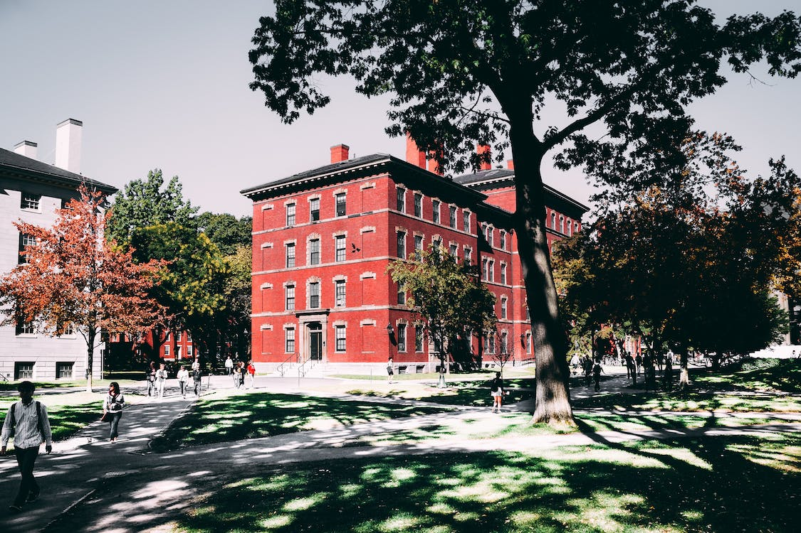

About the university
In addition to undergraduate courses, UNIFAM also offers courses of post-graduation and technological updating, in addition to carrying out various technology dissemination activities. To support activities, UNIFAM covers an area of 100,000 meters square, with modern classrooms equipped with multimedia, 150 laboratories and workshops, a research center connected to the Internet and a library with 50,000 books and professional journals.
The teachers are trained by specialists in the different areas of the course, and the masters and doctors work in activities of teaching, research projects and service expansion. the high standards quality of the college's laboratories enable the conducting certification tests and training the hand of constructions professional.